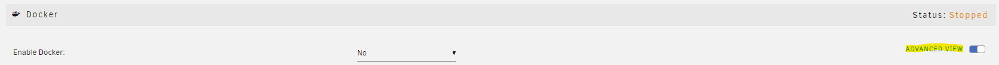
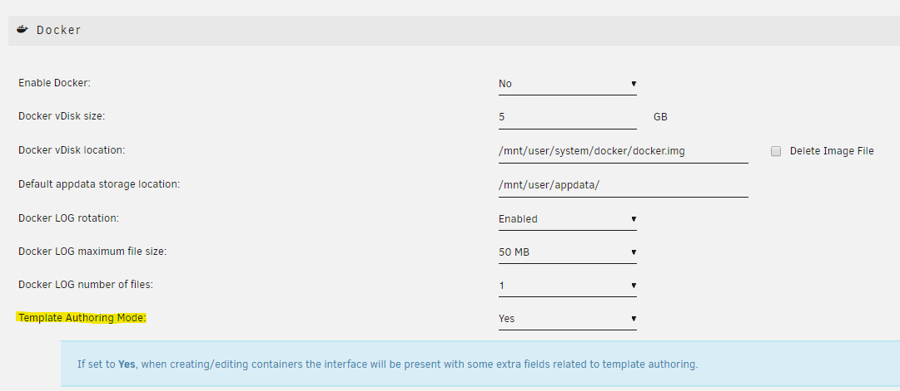
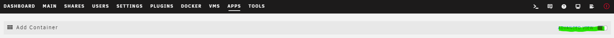

Writing a template compatible for unraid
This is an effort to collect information from Squids FAQ.
0. Enabling Template Authoring Mode
In order to have a smooth experience creating templates I highly recommend enabling Template Authoring Mode, it allows you to see the XML in clear-text and some other small neat tricks we might need to come back to.
This process requires you to shutdown the docker service for a short while, as unraid doesn't let us change the setting with the service running.

When the docker service is successfully shutdown, enable advanced view

We can now enable authoring mode, you can also toggle the docker service back on

1. Choosing which way to go
We can get started writing templates in two ways:
- Convert a template generated by Community Application, the CA way
- Work directly with the XML
The CA way
1.1.0 Enabling search from dockerHub
In order to have Community Applications (hereby referenced as CA) generate one, we need to enable additional search from dockerHub. You do this by opening CA, and press the settings button on the sidebar

Enable additional search

1.1.1 Search from DockerHub
For this guide I will use domistyle/idrac6 as an example. Go back to CA, and type the image you want to create a template for, in the search bar (If you get a match now, chances are, it is already in CA), and press Get More Results From DockerHub

CA shows results for both the image-maintainer, and image-name. Which means that we will get similar results. Press the download to disk icon, and let CA convert it

For this one CA didn't do a very good job in converting it (it reads the dockerfile for volumes, expose, publish etc.), however we can modify it with the template editor in Unraid

1.1.2 Editing the template
To see what we need to edit, we can most often read the readme of the container (including a screenshot incase the readme changes)

Get to know the template editor, its very handy. Also for managing existing templates
I'm going trough the rest of this guide with a mix of views (to remove clutter from images). If some of the settings you see on a screenshot isn't showing to you, enable advanced view 
Variables
I will start with adding the variables, just because those are on the top of the documentation of this container.
To add the IDRAC_HOST variable, we are going to press the Add annother Path, Port, Variable or Device link

We need to change the Config Type to Variable, then we can start adding values. There is a lot going on here, but it is all going to make sense in the end.
Name The name for the variable, this is to help the user identifying what this variable does.
Key This is the actual variable, so we are puttingIDRAC_HOSThere.
Value We don't fill this, this is for the user.
Default Value We could fill this, but since we can only do a estimated guess on what a users idrac host is, we are going to skip it.
Description Usually I don't fill this field with this long of a text, but the documentation of the container had a good one, so I'm using it.
Display This decides if the "average user" (someone that isn't using advanced view) is going to see this variable.
TODO: add view-modes
Required I set this to yes because I know the container wont work without it set. The fact that the documentation tells me its required also helped in the decision.
Password Mask This isn't a password, so it doesn't need to have its value masked behind asterisk (*).

Here is some screenshots on how I added the other required variables
 Here I set the Default value as root, since I know that's the default username on idrac
Here I set the Default value as root, since I know that's the default username on idrac
 Here I set the Default value as calvin, since I know that's the default password on idrac, I also enabled Password Mask
Here I set the Default value as calvin, since I know that's the default password on idrac, I also enabled Password Mask
Volumes
Next is adding the volumes. We press the same Add annother Path, Port, Variable or Device link, but we don't need to change the config type this time.
The fields we can add here is mostly the same, but in "Volume" mode some of them are voided. like password mask.
If its a "proper" appdata location, I set required to yes
Access Mode Defines how the container should have access to this volume. Almost always read/write

Ports
Now its time for the ports. We press the same Add annother Path, Port, Variable or Device link. This time we need to change the config type to Port
The documentation for this container says we can use port 5800 to access the interface, so that's the port we are going to add.
Connection Type Always
TCP, unless specified otherwise

Metadata
Now you have a basic template. This might be enough for your own usage, but in order to add it to CA we should add some spice to the template.
As you can see there is lots of fields we can fill in with the template editor.

I'm not going to walk you trough this, but I am going to tell you how it ended up like it did.
I changed the overview to match the intro from the readme of the container
I used the dropdown to set the categories as I saw fit
I set the support thread as the issue page of the project
Do not do this if you are creating a template for your own container, create a support thread on the unraid forums and use that link
The project page is usually the GitHub link to the container
I have yet to change the Icon URL, because I need to create a icon
WebUI Should be filled with the container port, unraid should do the translation http://[IP]:[PORT:5800]. If this is a https enabled port, set the url to use https
For Post arguments and Extra Parameters, you should know if you need to fill this

Grab the XML
Once you have filled all the fields, and set the ports, variables and volumes as good as you can, you can press the Save button, this takes you to a page where can see the xml in plain-text. Don't worry, it also saves the xml to your OS disk. Bellow is the XML generated by the procedure above
Example
<?xml version="1.0"?> <Container version="2"> <Name>idrac6</Name> <Repository>domistyle/idrac6</Repository> <Registry>https://hub.docker.com/r/domistyle/idrac6/</Registry> <Network>bridge</Network> <MyIP/> <Shell>sh</Shell> <Privileged>false</Privileged> <Support>https://github.com/DomiStyle/docker-idrac6/issues</Support> <Project>https://github.com/DomiStyle/docker-idrac6/</Project> <Overview>Allows access to the iDRAC 6 console without installing Java or messing with Java Web Start. Java is only run inside of the container and access is provided via web interface or directly with VNC.</Overview> <Category>Tools: Network:Management</Category> <WebUI>http://[IP]:[PORT:5800]</WebUI> <TemplateURL/> <Icon>/plugins/dynamix.docker.manager/images/question.png</Icon> <ExtraParams/> <PostArgs/> <CPUset/> <DateInstalled>1579532295</DateInstalled> <DonateText/> <DonateLink/> <Description>Allows access to the iDRAC 6 console without installing Java or messing with Java Web Start. Java is only run inside of the container and access is provided via web interface or directly with VNC.</Description> <Networking> <Mode>bridge</Mode> <Publish> <Port> <HostPort/> <ContainerPort>5800</ContainerPort> <Protocol>tcp</Protocol> </Port> </Publish> </Networking> <Data> <Volume> <HostDir/> <ContainerDir>/vmedia</ContainerDir> <Mode>rw</Mode> </Volume> <Volume> <HostDir/> <ContainerDir>/app</ContainerDir> <Mode>rw</Mode> </Volume> <Volume> <HostDir/> <ContainerDir>/screenshots</ContainerDir> <Mode>rw</Mode> </Volume> </Data> <Environment> <Variable> <Value/> <Name>IDRAC_HOST</Name> <Mode/> </Variable> <Variable> <Value/> <Name>IDRAC_USER</Name> <Mode/> </Variable> <Variable> <Value/> <Name>IDRAC_PASSWORD</Name> <Mode/> </Variable> <Variable> <Value/> <Name>IDRAC_PORT</Name> <Mode/> </Variable> <Variable> <Value>false</Value> <Name>IDRAC_KEYCODE_HACK</Name> <Mode/> </Variable> <Variable> <Value>99</Value> <Name>USER_ID</Name> <Mode/> </Variable> <Variable> <Value>100</Value> <Name>GROUP_ID</Name> <Mode/> </Variable> </Environment> <Labels/> <Config Name="idrac host" Target="IDRAC_HOST" Default="" Mode="" Description="Host for your iDRAC instance. Make sure your instance is reachable with https://&lt;IDRAC_HOST&gt;. See IDRAC_PORT for using custom ports. HTTPS is always used." Type="Variable" Display="always" Required="true" Mask="false"/> <Config Name="idrac user" Target="IDRAC_USER" Default="root" Mode="" Description="Username for your iDRAC instance." Type="Variable" Display="always" Required="true" Mask="false"/> <Config Name="idrac password" Target="IDRAC_PASSWORD" Default="calvin" Mode="" Description="Password for your iDRAC instance." Type="Variable" Display="always" Required="true" Mask="true"/> <Config Name="WebUI" Target="5800" Default="5800" Mode="tcp" Description="web interface port" Type="Port" Display="always" Required="true" Mask="false"/> <Config Name="idrac port" Target="IDRAC_PORT	" Default="443" Mode="" Description="The optional port for the web interface." Type="Variable" Display="advanced-hide" Required="false" Mask="false"/> <Config Name="keyboard fix" Target="IDRAC_KEYCODE_HACK" Default="false|true" Mode="" Description="If you have issues with keyboard input, try setting this to true." Type="Variable" Display="advanced-hide" Required="false" Mask="false">false</Config> <Config Name="PUID" Target="USER_ID" Default="" Mode="" Description="PUID" Type="Variable" Display="advanced" Required="false" Mask="false">99</Config> <Config Name="PGID" Target="GROUP_ID" Default="" Mode="" Description="PGID" Type="Variable" Display="advanced" Required="false" Mask="false">100</Config> <Config Name="Virtual media" Target="/vmedia" Default="/mnt/user/appdata/idrac/vmedia" Mode="rw" Description="Can be used to allow virtual media to be mounted." Type="Path" Display="advanced" Required="false" Mask="false"/> <Config Name="Libraries" Target="/app" Default="/mnt/user/appdata/idrac/app" Mode="rw" Description="Libraries downloaded from your iDRAC instance will be stored here. Add a volume to cache those files for a faster container startup." Type="Path" Display="advanced" Required="false" Mask="false"/> <Config Name="Screenshots" Target="/screenshots" Default="/mnt/user/appdata/idrac/screenshots" Mode="rw" Description="Container Path: /screenshots" Type="Path" Display="advanced" Required="false" Mask="false"/> </Container>